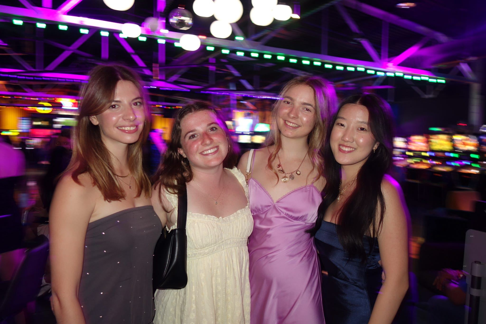
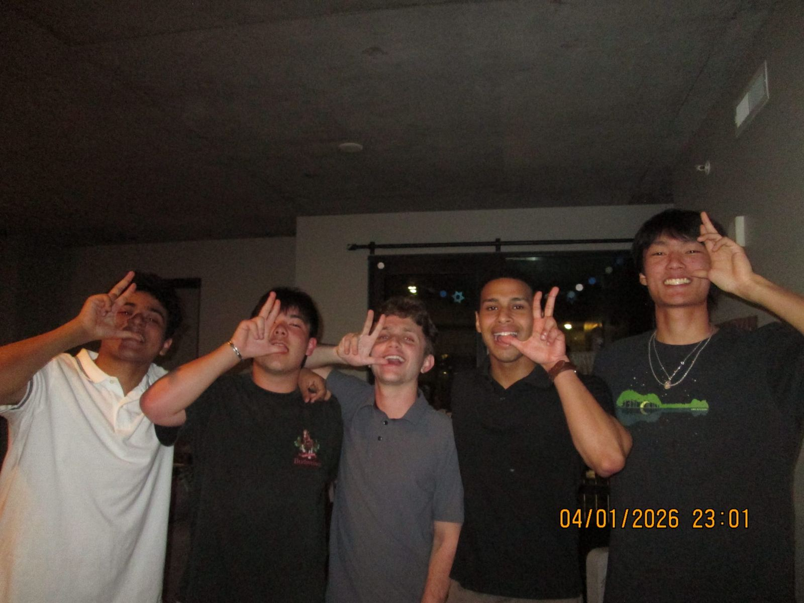
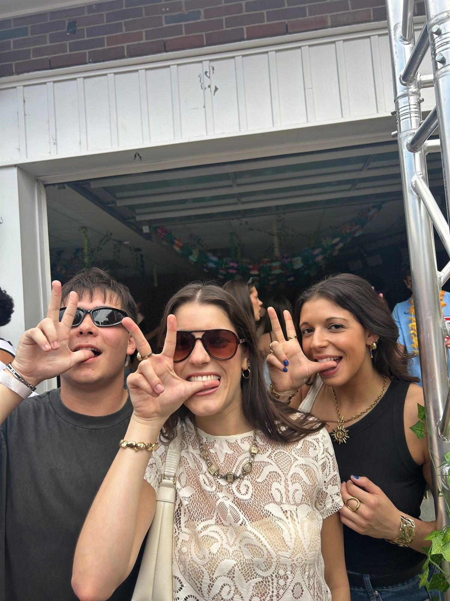
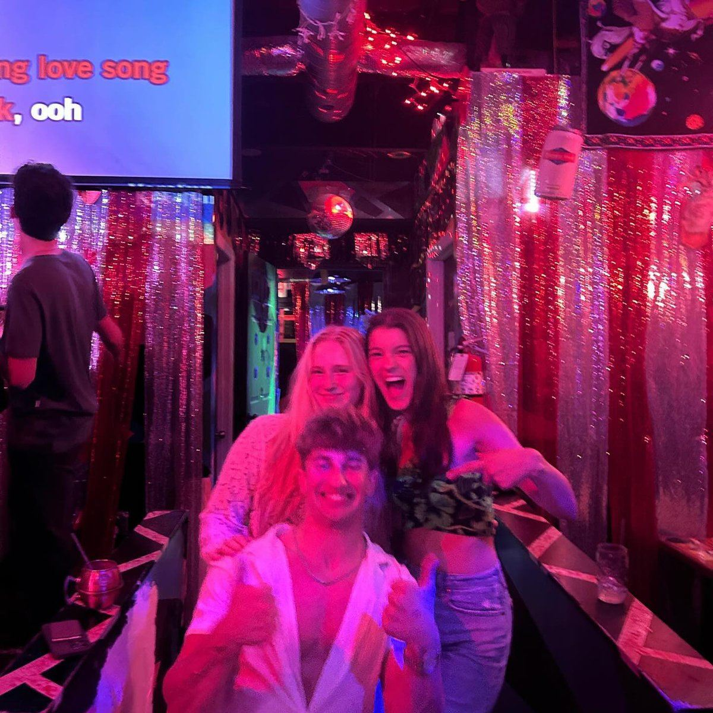
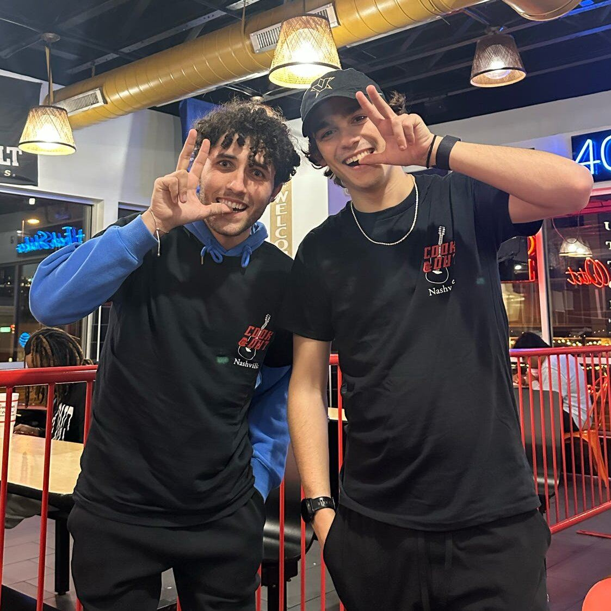

Vanderbilt's Professional Technology Fraternity
A brotherhood for students who build with technology, whatever they study.
The First Professional Technology Fraternity in the Country
Kappa Theta Pi (ΚΘΠ) was founded on January 10, 2012 at the University of Michigan as a co-ed, pre-professional fraternity for students who are passionate about technology, regardless of major. Chapters across the country share one mission: develop the next generation of technologists through a brotherhood built on professional development, alumni connections, social growth, technical advancement, and academic support.
Members are engineers, computer scientists, data scientists, designers, economists, and entrepreneurs. What unites them is a shared interest in building with technology and a commitment to helping each other succeed.
Vanderbilt's Only Professional Technology Fraternity, Founded in 2023
Our brothers study Computer Science, Electrical and Computer Engineering, Data Science, Mathematics, Human and Organizational Development, Economics, and more, across the School of Engineering, the College of Arts and Science, and Peabody College.
Each semester the chapter runs technical workshops, resume and interview preparation, speaker and recruiter events, project teams, and social programming, alongside a structured new-member education process. We recruit at the start of every fall and spring semester.

Professional by Design. Close by Default
Formals, retreats, big/little, study groups, and late nights before a hackathon demo. The professional side only works because the people do.
See KTP in actionWhat You Get Out of It
Professional Development
Workshops, mock interviews, and recruiting prep built for tech.
Network
Brothers, alumni, and recruiters at the companies you want to work for.
Community
A brotherhood that shows up for each other, in class and out of it.
Leadership
Real responsibility running a young chapter, from committees to the Executive Board.
Service
Projects that put our skills to work beyond campus.








Started by Students Who Wanted a Tech Community on Campus
The Rho Chapter was chartered in 2023 by a group of Vanderbilt students who saw that one of the fastest-growing majors on campus had no professional community to call its own.

 View Profile
View Profile